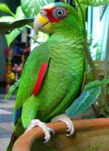

Hábitat
Generalmente estos pájaros viven en regiones cálidas o tropicales. Algunas especies de este grupo están clasificadas en peligro de extinción, La destrucción del hábitat del cotorro y la competencia con otras especies invasoras, han hecho decaer las poblaciones salvajes.
Generalmente viven en regiones tropicales o cálidas. Los loros se extienden por el hemisferio sur, además de la región tropical y subtropical del hemisferio norte, distribuidos por el sur de Asia, el África subsahariana, Oceanía, América del Sur y Central, y en el pasado había una especie nativa de Norteamérica, el lorito de Carolina extinto en época histórica. Aunque las mayores poblaciones nativas son las de Australasia, América del Sur y América Central. Los loros ocupan un gran espectro de hábitats desde la selva húmeda tropical hasta los desiertos del interior de Australia.
Estilo de vida
El loro se alimenta principalmente de semillas, raíces, tubérculos y frutas. Aunque su dieta también incluye hojas, insectos y algunas presas pequeñas. Este animal requiere ingerir poca cantidad de agua cada día.
Lamentablemente el número de loros ha disminuido de forma drástica debido especialmente al comercio ilegal de ejemplares. Asimismo, es producto de la destrucción masiva de su hábitat natural.
Caracteristicas
-
Poseen una gran capacidad craneal y son uno de las especies de aves más inteligentes.
-
Son aves que tienen un excelente vuelo y son capaces de sostenerse a las ramas de los árboles y trepar por ellas con mucha destreza, debido a que tienen muy buenas garras.
-
Generalmente los cotorros se caracterizan por tener un pico curvado, con una mandíbula inferior con cierta movilidad en su conexión con el cráneo.
-
Estas especies pueden imitar gran cantidad de sonidos, incluyendo la voz humana, aunque no poseen cuerdas vocales, pero si usan un órgano que se encuentra situado en la base de la tráquea que lleva por nombre siringe.
-
La captura indiscriminada de estos pájaros ha hecho que las especies en peligro de extinción ascienda.